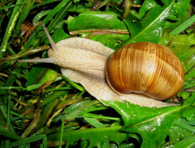
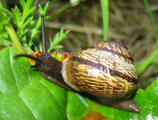
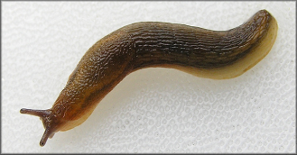
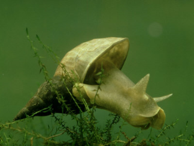
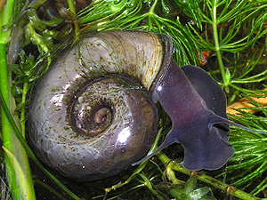
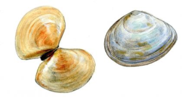
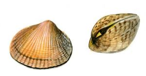
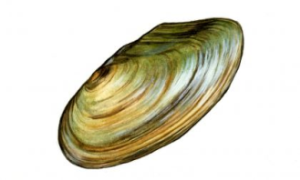
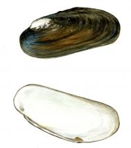

Sastopamība Latvijā
Latvijā sastopamas 2 klases: gliemeži un gliemenes. Apmēram 80 sauszemes gliemežu sugu, 48 saldūdens gliemežu, 42 saldūdens gliemeņu, 3 jūras gliemežu un 4 jūras gliemeņu sugas. Latvijas Sarkanajā grāmatā iekļautas 7 sugas.
| Sugas attēls, nosaukums | Dzīvesveids, izmantošana |
|---|---|
|  Parka vīngliemezis |
Lielākais gliemezis Latvijā. Ievesti 15.-16. gadsimtā, audzēti lietošanai uzturā. Dārza kaitēklis. |
|  Raibais vīngliemezis |
Vienīgā gliemežu suga, kas kļuvusi par kaitēkli ne tikai dārzos, bet arī mežos. Barojas arī ar latvāņiem. |
|  Rūsganais kailgliemezis |
Dārza kaitēklis |
|  Lielais dīķgliemezis |
Pārtiek no ūdensaugiem. |
|  Lielā ūdensspolīte |
Pārtiek no aļģēm un trūdošiem augiem. Lielā ūdensspolīte ir ūdensputnos parazitējošo sūcējtārpu starpsaimnieks. |
|  Baltijas plakangliemene (Baltijas plānčaulgliemene) |
Jūrā dzīvo uz grunts, parasti apmēram 5 cm ierakusies, visbiežāk līdz 20 metru dziļumam. Īpatņu skaits uz kvadrātmetru grunts mēdz sasniegt vairākus simtus. Ļoti bieži un masveidā izskaloti gliemežvāki redzami jūras krastā, īpaši gar Rīgas līci. Čaulas pievieno vistu barībai kā kalcija avotu. |
|  Lamarka sirsniņgliemene |
Jaunās gliemenes uzturas uz ūdensaugiem, vēlāk šī suga dzīvo uz smilšainas grunts. Gliemežvāki bieži redzami izskaloti jūras krastā, īpaši gar Rīgas līci. Čaulas pievieno vistu barībai kā kalcija avotu. |
|  Dižā bezzobe |
Vislielākā gliemene Latvijā - čaulas garums līdz 17 cm, reti vairāk. Bieži sastopama visā valstī stāvošos, dūņainos ūdeņos, galvenokārt dīķos. |
|  Ziemeļu upespērlene |
Ļoti reta, aizsargājama suga. Uzskata, ka dzīves ilgums var sasniegt 50 gadus. Čaulas garums pieaugušam īpatnim sasniedz 11-13 cm. Sastopama Vidzemē, galvenokārt Gaujas pietekās. Piesārņojuma un upju gultnes pārveidošanas dēļ tās areāls visur Z-Eiropā sarucis.Lai gan, starp mantiju un čaulu iekļūstot smilšu graudam vai līdzīgam svešķermenim, šī suga veido pērles, mūsdienās Latvijā atrast pērli ir faktiski neiespējami, turklāt šajā aizsargājamajā gliemenē pērles meklēt aizliegts, jo, sabojājot čaulu, gliemene iet bojā. |